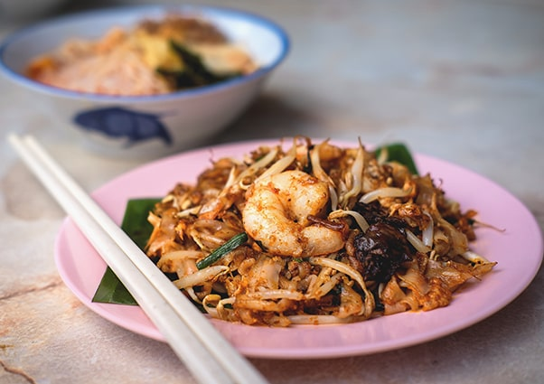
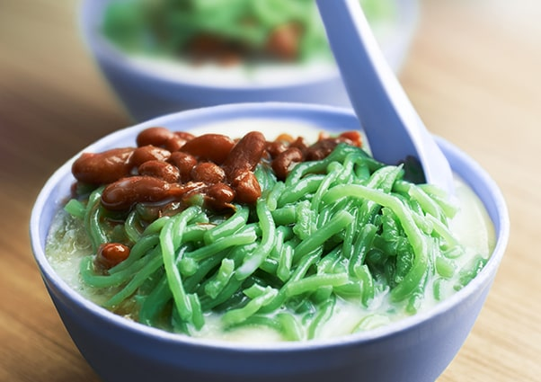

Penang cuisine is the cuisine of the multicultural society of Penang, Malaysia. Most of these cuisine are sold at road-side stalls, known as "hawker food". Local Penangites typically find these hawker fares cheaper and easier to eat out due to the ubiquitousness of the hawker stalls and that they are open much of the day and night.
Penang Cuisine

Assam Laksa

Available in most kopitiam(coffee shops) and street food stalls in Penang, Penang assam laksa is not only well known among the locals but the dish itself is also widely recognised around the world. It was voted as the 7th most delicious food by CNNGo. The dish consists of thick rice noodles soak in a strong fish and tamarind soup base accomodated by various other ingredients depending of the vendor.
Char Koay Teow
Char Koay Teow has been a staple dish amongst the locals for its unique and distinctive taste which can't be found other than in Penang. Char Koay Teow are generally available at most kopitiam(coffee shops) and street food stalls in Penang. The dish mainly consists of flat rice noodles, small prawns and beansprouts with other various ingredients.
Hokkien Mee
Don't confuse yourself with the Hokkien Mee that you would usually find at other states than Penang. This dish is called Penang Hokkien Mee. It is made delicious by its rich prawn and pork soup base. Normally eaten with yellow noodle and rice noodles and sometimes instant noodles. Penang Hokkien Mee is usally garnished with fried shallots and special spicy prawns to finish. Penang Hokkien Mee as it is suggested can only be found in Penang. It is mostly available in most kopitiam(coffee shops) and street food stalls in Penang.
Curry Mee
With the Penang white curry mee getting famous worldwide, try out the original Penang curry mee now that you’re in Penang. With an unforgettable taste like no other, Penang curry mee comes in a light curry soup base, yellow noodles and rice noodles, garnished with dried tofu, beansprouts and more. Available in most coffee shops and street food stalls in Penang.
Teochew Cendul
Don’t worry about not finding the small lane where this Penang famous Teochew chendol stall is located. Spot the long queue off Jalan Penang and you are at the right place. Cool yourself down after a walk round George Town with a bowl of Penang chendol, a local dessert with a coconut milk and gula Melaka (palm sugar) base, topped with red beans, pandan flavoured noodles and shaved ice.
Nasi Lemak
Small triangular packets of rice cooked in coconut milk accompanied by a dollop of sambal, hard-boiled egg and crispy fried anchovies are ubiquitous. Nasi lemak is considered as the national dish of Malaysia.
Nasi Kandar
The Indians, whether of Muslim or Hindu faith, had given Penang its most famous and sought after cuisine – the nasi kandar. People have been known to travel from all over just to score a plate of rice utterly drenched in at least two types of lively-flavoured curries accompanied by fried chicken, fish, mutton or seafood and myriad vegetables. What started as peddling rice and curry from hand carried carriers to port workers in Penang, nasi kandar has certainly come a long way since then. It’s no surprise since the Indians came from a land of spices from which they expertly grind into various curry pastes that produce robust and colourful curries and marinade.